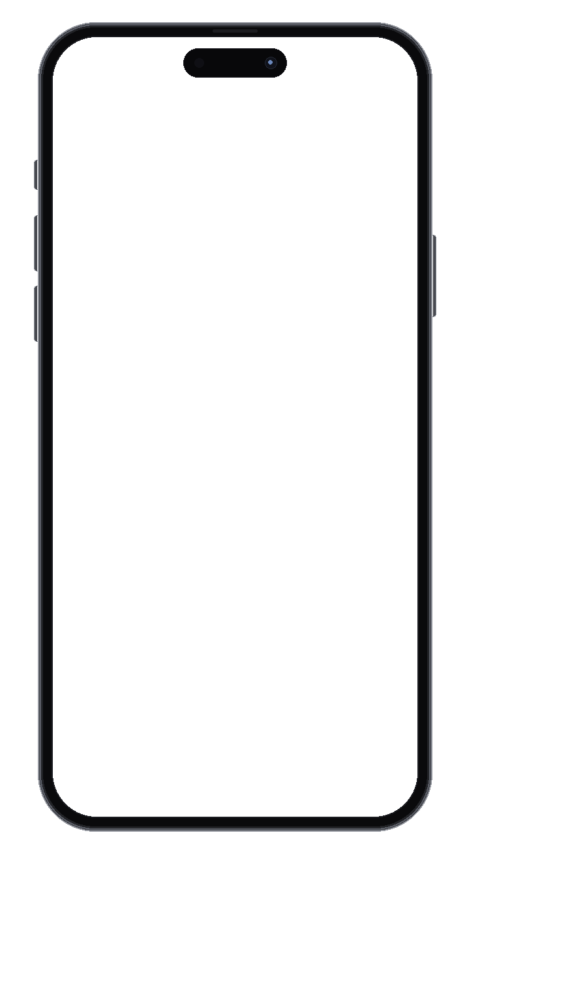
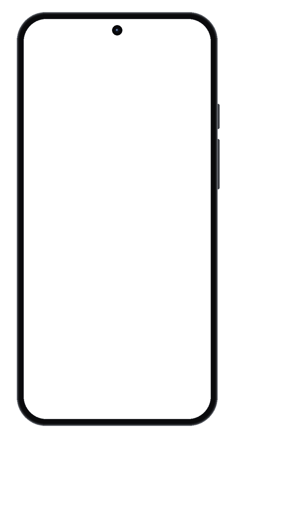
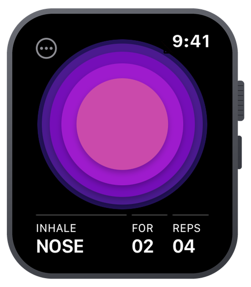
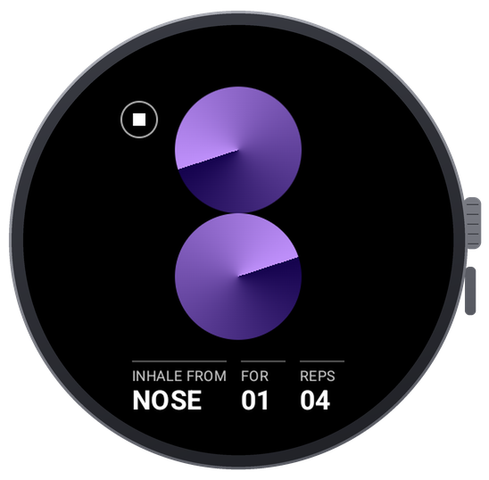

One tap. Touch the shape to begin. Touch it again to stop. That's all there is to learn.
A quiet place to breathe. Every day, a thousand things ask for your attention. Calmaria asks for one breath.


The messages. The meetings. The noise. And somewhere in between, we forget the simplest thing. To breathe.
One shape. It grows as you breathe in, rests as you hold, and lets go as you breathe out. You never have to count.
Three things. Where you are in the breath. How many seconds are left. How many breaths remain.
Just five minutes a day can lift your mood.1 So Calmaria is made of almost nothing. Your rhythm. Your pace. Your calm.
1. Balban et al., “Brief structured respiration practices enhance mood and reduce physiological arousal,” Cell Reports Medicine, 2023.
One breath, five ways to see it. Dots, Glass, 80s, Circles and Angular all do the same quiet thing. They move with you, so you don’t have to count.
Dots. A calm grid of dots. It swells into a sphere as you breathe in, glimmers as you hold, and settles flat as you let go.
Made to disappear. No accounts. No ads. No subscriptions. No notifications calling you back. Calmaria stays out of the way, on every screen you own.
Fits any screen. Rotate your phone, unfold it, or open Calmaria on a wide display. It settles into two calm halves: words and numbers on one side, your breath on the other.
Four classic rhythms. Or your own. 4-7-8 to wind down. Box breathing to focus. 5-0-5 for an even pace. 7-11 for a long, slow release. Or write your own, and keep it.
4 · 7 · 8
5 · 5 · 5 · 5
5 · 0 · 5
7 · 11
Custom
Sound for closed eyes. Soft chimes and gentle ticks mark each phase, so you can look away from the screen. Your phone or wrist taps along.
A moment to check in. When you finish, a little confetti, and one question: how do you feel? Your history stays on your devices, syncing between phone and watch. On iPhone, every session is saved as mindful minutes in Health.
On your wrist, too. Apple Watch and Wear OS, the same idea. Tap once, feel each phase as a gentle pulse, and breathe. It stays in step with your phone.


Questions? Answers.
What does Calmaria mean?
In Portuguese, calmaria (/kɑʊma’ɾia/) means calm and stillness. Sailors and surfers use it for the moment the wind drops and the ocean goes flat. That’s the feeling this is for.
Is Calmaria really free?
Yes. No subscriptions, no ads, no accounts, no upsell. Calmaria is here to help you breathe, not to keep you looking.
Which rhythm should you start with?
If you’re not sure, start with 4-7-8: in for four, hold for seven, out for eight. It’s a gentle way to wind down. Box breathing (5-5-5-5) is good when you need to focus. Choose whatever feels comfortable, and if anything feels strained, stop and breathe normally.
Does the web app do everything the phone apps do?
Yes. The web app has all five themes, your own rhythms, sound, mood check-ins and history. Add it to your home screen and it feels like any other app.
Where is my data kept?
On your devices. Your history lives on your phone and watch and syncs between them through Apple’s and Google’s own services, not a Calmaria account. We don’t run a server that receives it. Read the privacy policy for backups and how to delete your history.